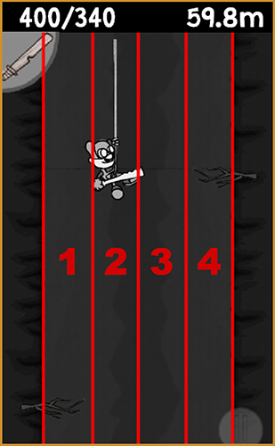
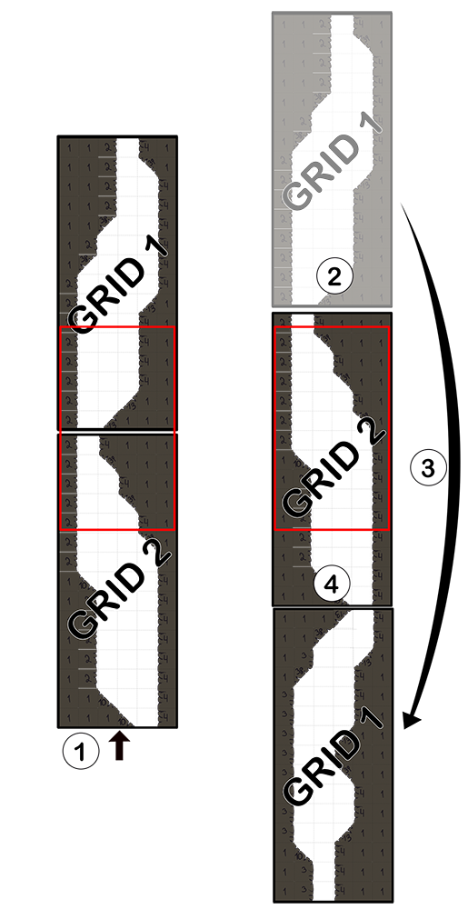
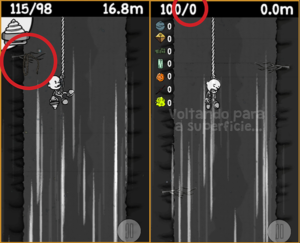
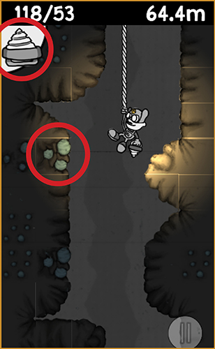
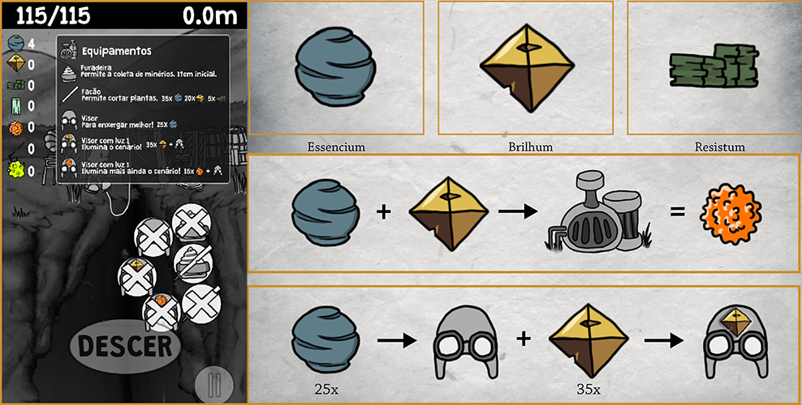

My role in this project: The project was almost entirely designed and implemented by me, except for a few things like the audio and save system.

tl;dr: A sort of "runner" game where you control an explorer diving into a ravine with a rope attached to himself. You can find more rope during your trips, to extend the maximum range you can reach on the following trips, and find resources to aid in your adventures.
Ravina is the game that I made for my final university assignment. Technically we had a year to make the game, but the first semester was almost entirely dedicated to the research and the second semester was dedicated to the game. The research was about safe and comfortable one-handed usability for gaming in mobile devices, and the game was built to try to prove the findings of the research. So yeah, we had a single semester to make it... seems like a lot of time, but not to my skills I guess! The group had a disagreement on whether to start the game during our midterm break which divided the "research semester" with the "game semester" so I had to go ahead and start production by myself, which is the reason the game was made almost entirely by me - when the midterm break was over, the development was so advanced that they couldn't even understand my code enough to be able to help implementing anything. The part of the code with the save system was implemented by another team member, and the audio was acquired and edited by another team member, but the rest of the game was made by me. The group helped with other very important tasks, though, like polishing the GDD/research paper or creating the marketing document and doing other scholarly things I couldn't focus on.
You control an adventurous researcher that sets out to explore a mysterious ravine that opened up somewhere. Equipped with some rope and mining equipment, you jump down to explore the narrow gorge. You can find lost pieces of rope from previous adventurers, which allow you to reach further down on your following attempts.

There are 4 lanes you can stay on. This simplifies the gameplay a bit but keep things more fair, and also helps align the gameplay with the tile system.
The game generates two grids that move in a treadmill pattern. When a grid disappears at the top of the screen, it reappears at the bottom of the current grid, and rearranges its tiles depending on the level design algorhythm, and to the player the transition is seamless.
You have a limited length of rope you can rely on during every descent. When you run out of rope, you suddenly stop and then you have to go back to the surface. You can find more rope on branches scattered on the ravine's walls, maybe lost by previous adventurers who failed on their mission.
You start out with a hand drill you can use to gather different kinds of ore from the ravine's walls. To help with one-handed usability, the character switches to the drill automatically when there are ore patches nearby, so the player doesn't have to worry about an additional input when gathering resources. There is also a visual cue to let the player know that an ore patch is coming: there are always unreachable bits of ore inside the walls, above the ore patch, that appears before the collectable ore appears, so the player can have some more reaction time.
You can get 3 different ores. Essencium, the basic ore, resistum, the enduring ore, and brilhum, the shiny ore. Each has its own use and crafting recipes. You can craft machines and other things that can help you in your journey, like a visor with a light that needs to be used in darker parts of the cave, and a machete that needs to be use in later stages to destroy tentacles that sprout from the walls, and even combine ores to make different alloys.
By the end of the year the game was almost finished, albeit with a few bugs we couldn't fix. There was no time for polishing, but we did fairly well at the final presentation. The professors really liked the idea for the research, which was comfortable and safe one handed usage of mobile devices. The whole entire last year was dedicated to finding a problem related to game design, and I managed to find one that was never really explored deeply, in the context of game development. Everyone on the group managed to pass the final year and move on with their lives.
Here are some other development images and gifs.


You can download the .apk here.
What you can do: this version is feature complete. Please note that you may still encounter a few bugs, as there was time to finish the main mechanics but there wasn't much time to look for and squish bugs.